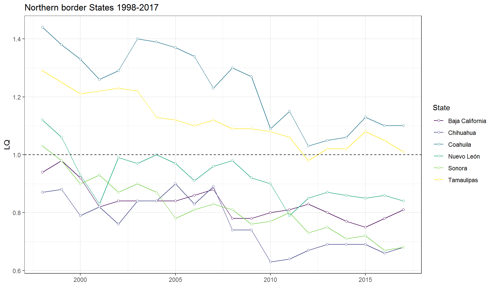
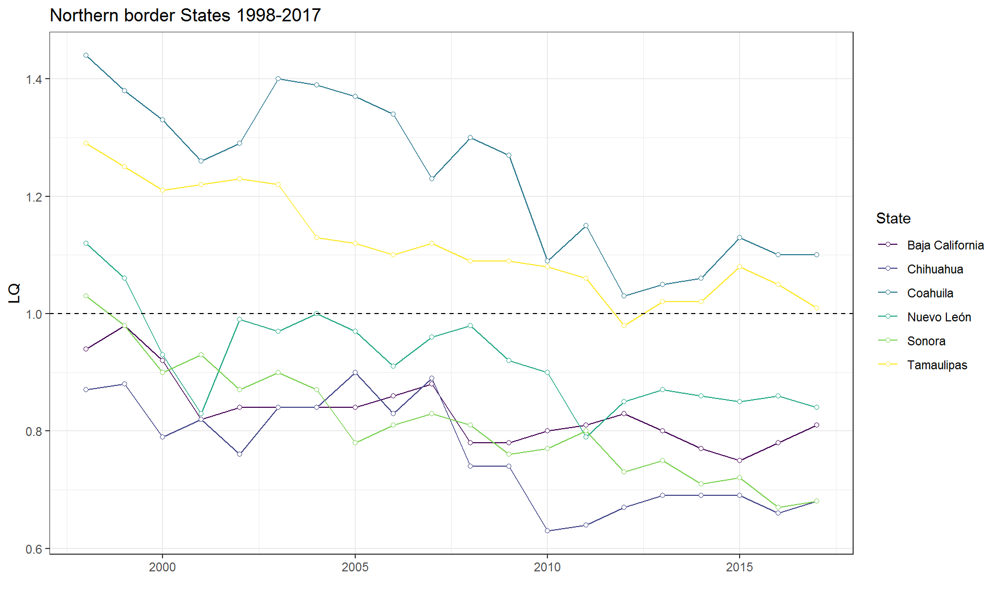

Location quotient LQ. A Spatial concentration perspective.
Here a relative concentration measure, the location quotient LQ, is estimated to evaluate the diabetes epidemic trend in time by state and border region.
The quotient may take two relevant values: LQ > 1, which indicates that diabetes deaths cases are higher in a particular state relative to the national level.
Whereas values LQ <1 indicate a lower proportion relative to the national level.
Using this relative measure allows controlling the population size in every state, to determine diabetes deaths concentration among different geographic areas.
First a cross section look for the most recent data publicly available is presented. We can clearly see that some states such as Tabasco in the souther border rank at the top concentration levels a result consistent with the profile depicted by the Age adjusted Mortality rate, previously estimated.

Next we isolate just the border states to query the evolution over the complete 20 year period from 1998 to 2017 by estimating the LQ for each state for each year.
 

LQ evolution in time, depicted above, reveals a clearer pattern, an opposite path between the two border regions. While the observed trend suggest an important epidemiological transition towards improved public health at the US-Mexico border, the opposite holds true for the Mexico-Guatemala-Belize border.
What social determinants influence this relocation of disease at a regional level?
Despite the sustained increase found at the southern border by 2017, diabetes mortality concertation levels for the region still remained below the national proportion with a clear exception, Tabasco. The last mentioned is a relatively affluent state in the region2 that register a proportion 20% higher than the national incidence. In addition, it is worth noting the path followed by Chiapas, the state with the lowest household income profile among the entire sample3, showing the lowest relative diabetes death concentration.
Furthermore, an analysis string that has gain strength among other behavioral correlates in developing countries, such as Mexico, points towards changing consumption patterns as a key determinant. Arguably, social process, such as rural to urban migration that had previously posed major puzzles for public health (Harpham, 2009), represent forces that may supplant traditional dietary practices (Leatherman and Goodman, 2005). This happens even in regions such as the Mexico-Guatemala-Belize border, where the largest segment of indigenous population in the country lives.
comments powered by Disqus